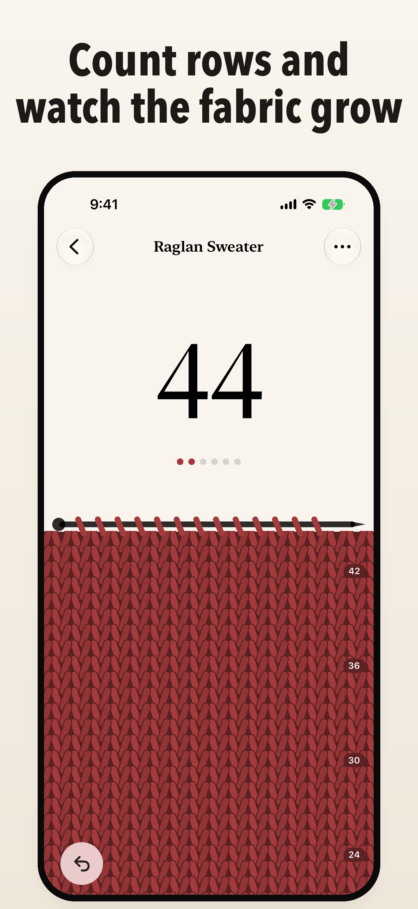
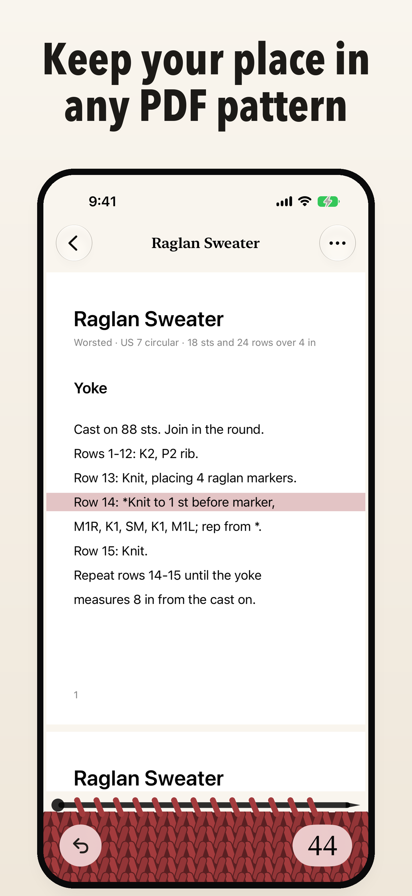
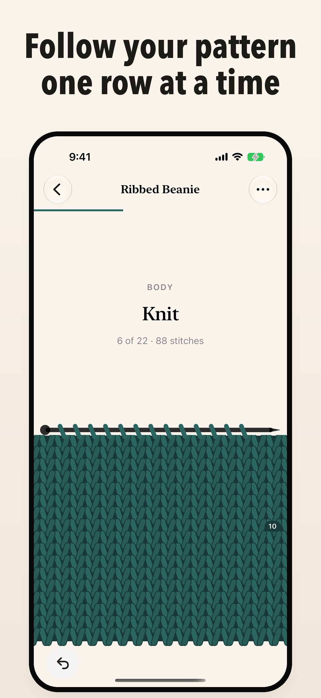
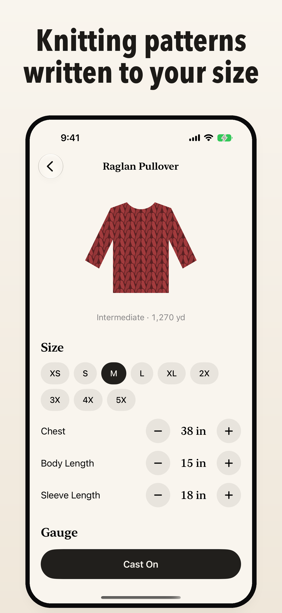
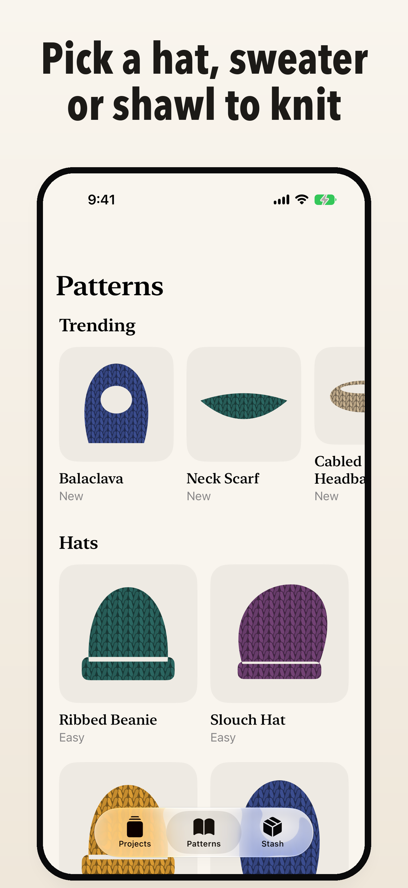

A free row counter that grows as knitted fabric, your own PDF patterns with your place marked, and a yarn stash. Add patterns written to your size and gauge.
iPhone · Works offline · No account





It counts your rows, keeps your place in the pattern you already own, and tracks your stash, all free with no account. Ravel Patterns writes a library of designs to your size.
Tap anywhere to add a row and tap the arrow to take one back. The fabric on screen grows with the piece on your needles.
The count is written to disk the moment you tap. Already mid-project? Set the row you are on.
Set the rows in a repeat and see where you are in it.
Add a PDF or photos of a printed pattern, tap a line to mark your place, and count rows without leaving the page.
Yarn by weight and skein count, plus needles and crochet hooks in US and metric sizes.
The row counter and the stash work for crochet rows and hooks. The pattern library is for knitting.
Enter your measurements and gauge and every cast on, increase and decrease is worked out, from a baby hat to a 5X pullover.
Included with Ravel Patterns
Each tap shows the next instruction and the stitch count you should have on the needles. Jump to any section when you pick the work back up.
Included with Ravel Patterns
Hats, a balaclava, scarves, cowls, a cabled headband, blankets, a dishcloth, handwarmers, leg warmers, a shawl and a top-down raglan pullover. Inches or centimeters to match your region.
Included with Ravel Patterns
Yes. Your projects, row counts, notes, yarn, needles, hooks and pattern files stay on your iPhone. There is no account, and there are no advertising or analytics trackers. Purchases go through Apple, and RevenueCat confirms them using an anonymous app user identifier and purchase records. It never receives your projects, measurements or files.
Privacy Policy →How it's built.
Knitting takes a lot of counting, and a phone should do that part. Ravel keeps the everyday tools free: your projects, a row counter, the PDF patterns you already own and your stash. They work offline and never ask for an account.
The row counter is drawn as the fabric itself, so the piece on screen grows with the one on your needles. When you want a pattern written to fit, the library does the stitch math from your measurements and gauge.
An optional upgrade that unlocks the whole pattern library. Monthly or yearly, each with a 7-day free trial for new subscribers, or lifetime. Prices are shown in the app before you buy and vary by region. The Garter Scarf and the Diagonal Dishcloth are free.
Your measurements. Choose a design, enter your measurements and gauge, and every cast on, increase and decrease is calculated from your numbers. Sizes run from a baby hat to a 5X pullover.
One row at a time. Each tap shows the next instruction and the stitch count to expect. Jump to any section when you pick the work back up.
The library. Hats, a balaclava, scarves, cowls, a cabled headband, blankets, a dishcloth, handwarmers, leg warmers, a shawl and a top-down raglan pullover. The Trending shelf leads with new designs and what suits the season.
A pattern you cast on stays. It remains in your projects if you stop subscribing.
Yes. The Ravel row counter is free for good: tap anywhere to add a row, tap the arrow to take one back, and the count is saved the instant you tap. It works offline and needs no account.
Yes. Add a PDF or photos of a printed pattern to a project, tap a line to mark your place, and count rows without leaving the page. Your files stay on your iPhone.
Choose a design in Ravel Patterns, enter your measurements and your gauge, and the pattern is written to fit. Every cast on, increase and decrease is calculated from your numbers, in sizes from a baby hat to a 5X pullover.
Partly. The row counter and the stash work for crochet rows and hooks. The pattern library is for knitting.
No. Projects, the row counter, your own PDFs and your stash work offline and never ask for an account.
The price is shown in the app before you buy and varies by region. Ravel Patterns is monthly or yearly with a 7-day free trial for new subscribers, or a one-time lifetime purchase, and the Garter Scarf and Diagonal Dishcloth are free.
No. A pattern you have already cast on stays in your projects with its own copy of the rows, so later updates never change it.
| Platform | iPhone (iOS 17+) |
| Language | English |
| Framework | SwiftUI |
| Data | SwiftData on device |
| Storage | On device |
| Patterns | PDFKit reader for your own PDFs |
A row count is never lost. Every change to the count is saved to disk the moment it happens. There is no sync layer that could drop a count.
A cast-on pattern stays put. Each library project keeps its own frozen copy of the pattern, so an app update or a lapsed subscription never alters or removes it.
The stitch counts add up. Every design is tested at every size and yarn weight, and the stitch count carries from step to step.
The tracker stays free. Projects, the row counter, your own PDFs and your stash never go behind a paywall and never need a network.
Free on the App Store. No account required. Add Ravel Patterns anytime.